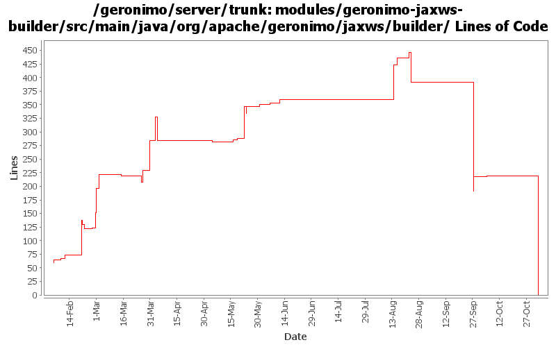

[root]/modules/geronimo-jaxws-builder/src/main/java/org/apache/geronimo/jaxws/builder

| Author | Changes | Lines of Code | Lines per Change |
|---|---|---|---|
| Totals | 72 (100.0%) | 878 (100.0%) | 12.1 |
| gawor | 31 (43.1%) | 533 (60.7%) | 17.1 |
| jgenender | 8 (11.1%) | 177 (20.2%) | 22.1 |
| dims | 13 (18.1%) | 87 (9.9%) | 6.6 |
| dwoods | 3 (4.2%) | 64 (7.3%) | 21.3 |
| djencks | 4 (5.6%) | 13 (1.5%) | 3.2 |
| rickmcguire | 2 (2.8%) | 4 (0.5%) | 2.0 |
| prasad | 10 (13.9%) | 0 (0.0%) | 0.0 |
| jdillon | 1 (1.4%) | 0 (0.0%) | 0.0 |
GERONIMO-3565. Modules distributed amongst framework/modules and plugins
0 lines of code changed in 10 files:
use sun saaj for command line client (since it's always installed but axis2 might not be)
1 lines of code changed in 1 file:
got ridd of initContextRoot() method that wasn't thread safe (GERONIMO-3495)
1 lines of code changed in 1 file:
a better way to determin geronimo home
28 lines of code changed in 1 file:
forgot to commit
0 lines of code changed in 2 files:
making cxf intergration more modular: separated ejb bits from servlet bits.
9 lines of code changed in 1 file:
refactored so that we can expose wsgen and wsimport command line tools. also, added a timeout for forked wsgen process so that we don't wait forever in case wsgen did not exit
58 lines of code changed in 3 files:
if generic Service class is specified and without wsdl, the service reference must be created with a dummy service qname (GERONIMO-3435)
20 lines of code changed in 1 file:
use the annotation Holder object for injections for POJO web services
15 lines of code changed in 2 files:
fork wsgen process on windows (GERONIMO-3405)
79 lines of code changed in 1 file:
updated debug messages
3 lines of code changed in 1 file:
GERONIMO-3246 Cleanup exception handling so stack traces for first failures are not discarded.
4 lines of code changed in 2 files:
check if configued service is really a jaxws service
11 lines of code changed in 1 file:
handle condition when getBaseDir() return a file and not a directory
6 lines of code changed in 1 file:
prepend / to the endpoint uri if missing
5 lines of code changed in 1 file:
revert some changes
13 lines of code changed in 1 file:
no need to pass servicename or portname when generating wsdl from class
0 lines of code changed in 1 file:
refactored and improved the wsdl generation code from axis2 module so that it can be reused in cxf
63 lines of code changed in 2 files:
GERONIMO-348 Change throw() to log.warn() due to EJB and other deployment failures.
4 lines of code changed in 1 file:
expose Module instead of the just the module jar file
2 lines of code changed in 2 files:
GERONIMO-348 Invalid module path or references in plan should result in failed deployment.
5 lines of code changed in 1 file:
GERONIMO-3134 GERONIMO-3136 Fix app client refs including ejb refs. Get a lot closer to jpa working on the app client
3 lines of code changed in 1 file:
use .value() on an enumeration type
1 lines of code changed in 1 file:
applied patch for G3045
11 lines of code changed in 1 file:
GERONIMO-3045 Unable to run jax-rpc war test with Axis2
Thanks Lin.
55 lines of code changed in 1 file:
handle web-service-binding element for ejbs
58 lines of code changed in 1 file:
use openejb metadata to discover/configure ejb-based ws
135 lines of code changed in 2 files:
spec-compliant default endpoint address for ejb web services
11 lines of code changed in 2 files:
GERONIMO-2958 MyFaces annotation support. Also clean up Module construction and remove unused method from ModuleBuilderExtension
0 lines of code changed in 1 file:
process imports. different wsdl parts could be in different files. eventually will have to hookup oasis catalog resolver here too
3 lines of code changed in 1 file:
GERONIMO-2922 - ALlow deployment without web.xml
76 lines of code changed in 1 file:
GERONIMO-2908 - Deploy JAX-WS services without webservices.xml
62 lines of code changed in 3 files:
Back out to 513153
2 lines of code changed in 1 file:
Fix the JAXWSBuilder to use the simple name
2 lines of code changed in 1 file:
GERONIMO-2882 patch committed
35 lines of code changed in 2 files:
GERONIMO-2887 Start hooking up injection for jetty
1 lines of code changed in 1 file:
GERONIMO-2865 Use defaultEnvironment instead of custom method to add dependencies to apps being deployed. Improve name of property setting jaxws implementation to use
9 lines of code changed in 1 file:
(GERONIMO-2858) Applied condition change from Jarek, only change to use props[''] syntax when default not needed
0 lines of code changed in 1 file:
running dos2unix and set svn:eol-style native ONLY (no code changes)
2 lines of code changed in 2 files:
GERONIMO-2849 - service-ref app client test
GERONIMO-2850 - CXF: initial web service support for EJBs
64 lines of code changed in 2 files:
(6 more)